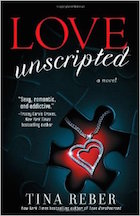

Love Unscripted by Tina Reber
An A-List Movie Star. . . Ryan Christensen just wanted to be an actor. Never in his wildest dreams did he imagine a life where fans would chase him, paparazzi would stalk him, and Hollywood studios would want to own him. While filming in Seaport, Rhode Island, Ryan ducks into a neighborhood bar for a quick escape from legions of screaming fans . . . and finds much more than he expected.
A Small-Town Girl. . . Nursing a recent heartbreak, Taryn Mitchell believes men are best kept at a safe distance. But when Ryan Christensen unexpectedly bursts through the front door of her pub, she can’t help but be drawn in by his humor, charm, and undeniable good looks. At six foot two, with dirty blond hair, blue eyes, and an incredible body, Ryan has every girl in Seaport swooning. But Taryn isn’t every other girl.
A Relationship That Doesn’t Follow the Script. . . Despite her better judgment, Taryn soon finds herself falling hard for Ryan. But is their bond strong enough to survive the tabloid headlines, the relentless paparazzi, and the jealous fans who seem determined to tear them apart?